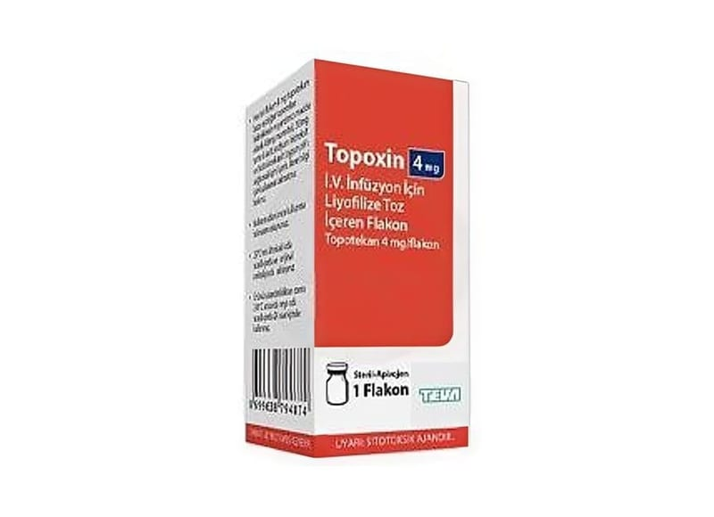

Topoxin 4 mg IV İnfüzyonluk Çözelti Hazırlamak İçin Liyofilize Toz, 1 Adet

Ne için kullanılır
KT · Bölüm 1TOPOXİN her biri 4 mg topotekan içeren 1 cam flakon içeren ambalajlar halinde orijinal karton kutuda sunulmaktadır.
TOPOXİN kanser hücrelerinin öldürülmesine yardımcı olur. Bir doktor veya hemşire hastanede bu ilacı damarınıza infüze etmek suretiyle size uygulayacaktır.
TOPOXİN aşağıdaki durumların tedavisinde kullanılır. Kemoterapi sonrası tekrarlanan yumurtalık kanseri veya küçük hücreli akciğer kanseri Radyoterapi ya da cerrahi yöntemle tedavinin mümkün olmadığı ileri rahim ağzı kanseri.
TOPOXİN rahim ağzı kanserinin tedavisinde sisplatin olarak isimlendirilen başka bir ilaçla birlikte uygulanır.
Doktorunuz, sizinle TOPOXİN tedavisinin ilk kemoterapiniz ile yapılan tedaviden daha iyi olup olmadığına karar verecektir.